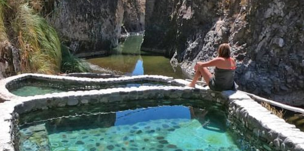
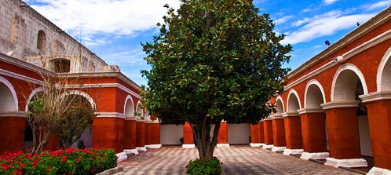
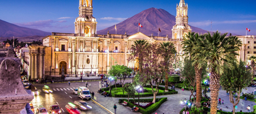

Arequipa, es la segunda ciudad más habitada del Perú. La región es considerada como una de las más hermosas del Perú, debido a las arquitecturas de sus construcciones, la gastronomía, sus impresionantes paisajes, imponentes volcanes y por tener el Cañón más profundo del Mundo.
Paquete 1 viaje Arequipa
a Te damos 6 noches y 5 días con 20% de descuento.
a Estancia en un hotel 3 y 4 estrellas(según tu elección)
a Te brindamos desayuno, almuerzo y cena en nuestro barra libre, además de centro de recreación para niños y piscina.
a Cercanía a lugares turísticos y restaurants.
a Te brinda una excelente seguridad en caso de una emergencia.

Atracciones destacadas como: Convento de Santa Catalina de Siena, Museo Arqueológico de la Universidad Católica de Santa María, Policlínico Metropolitano, Casa Museo Mario Vargas Llosa, Estadio Umacollo, Estadio Melgar, Iglesia San Juan Bautista de Yanahuara, Mirador de Yanahuara, Hospital Regional Honorio Delgado, Molino de Sabandia.

¿Que hay cerca?
Plaza de Armas de Arequipa, Iglesia de la Companía de Jesús,
Palacio Goyeneche, Catedral de Arequipa, Casa Ricketts, Iglesia de
San Agustín, Casa del Moral, Convento e Iglesia de La Merced, Iglesia
y Convento de Santo Domingo, Museo del Santuario Andino de la
Universidad Católica de Santa María.

Contamos con todos los protocolos de bioseguridad.